Autonomous Search & Rescue Drone
AT-01
Mechanical design engineer for the multirotor platform — lightweight construction, functionality, component integration, and structural layout, verified through structural simulation.
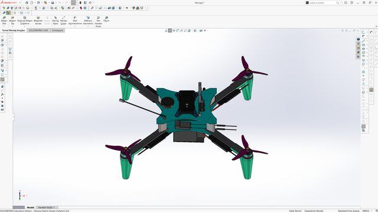
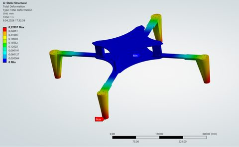
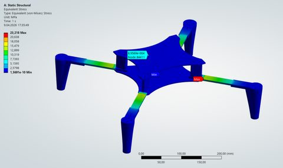
SolidWorksANSYS MechanicalStructural Design
Autonomous Search & Rescue — Fixed Wing
AT-02
Contributed to design and manufacturing of the fixed-wing UAV platform for the same search-and-rescue system, strengthening mission-oriented UAV development skills.
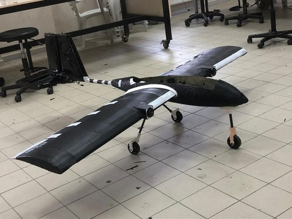
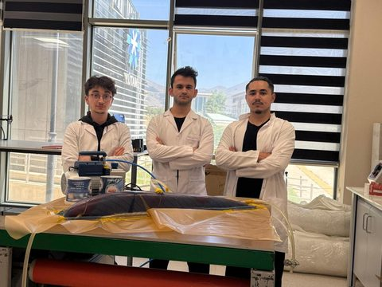
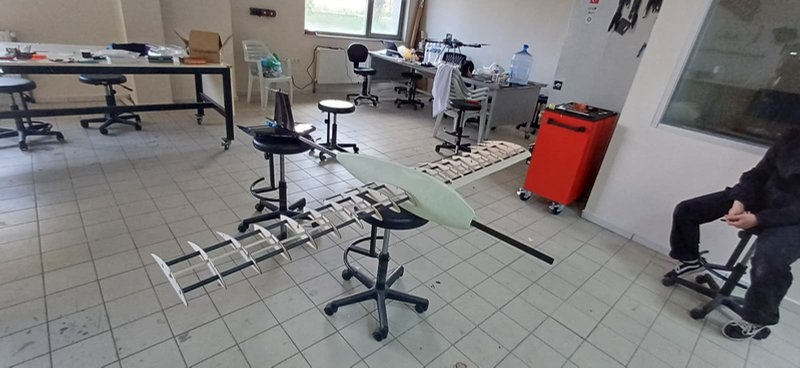
Composite LayupFlight TestTeam Build
Surveillance & Reconnaissance UAV
AT-03
Designed and developed a practical fixed-wing UAV platform for observation, monitoring, and field reconnaissance missions, from CAD through to manufacturing.
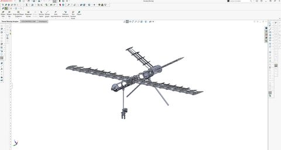
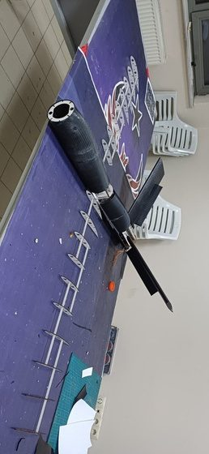
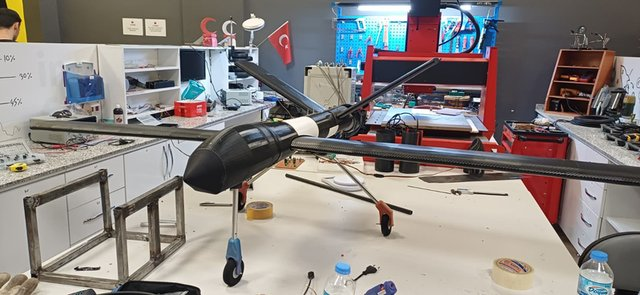
Siemens NXAirframe DesignManufacturing
Surgical Animation & Titanium Post-Processing
AT-04
At Add4Bio, created surgical animations to walk doctors through the procedure pathway, and post-processed manufactured titanium implant parts — sanding and polishing. A non-realistic skull model from GrabCAD stood in for any real patient data.
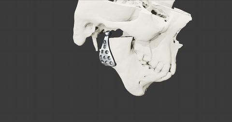
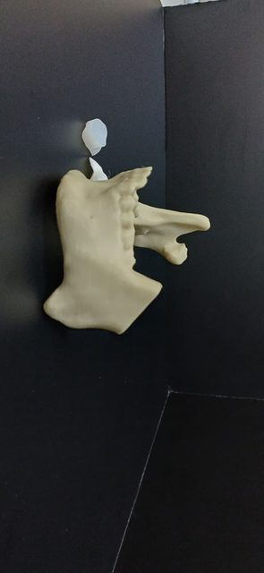
BlenderMedical DevicesPost-Processing
Trailer Rear-Impact Test System
AT-05
A safety-focused project evaluating a patented energy-absorbing system for the rear of truck trailers. Since the test vehicle carried no driver, the team built a dedicated steering and release mechanism to guide and deploy it safely during impact testing.
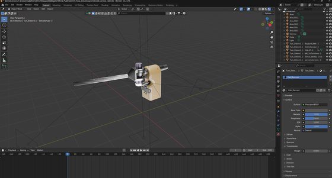
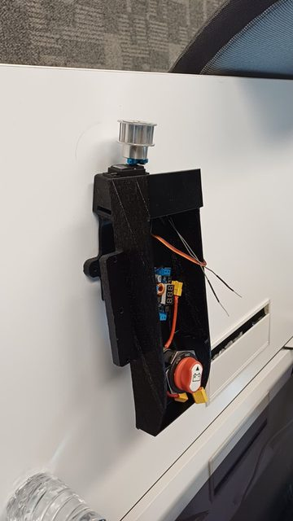
Test EngineeringControlsSafety Systems
CFD & Structural Analysis — TEKNOFEST Combat UAV
AT-06
Aerodynamic and structural analysis of a UAV test prototype built for the TEKNOFEST Combat UAV Competition, using ANSYS Fluent, ANSYS Mechanical, and XFLR5 to study airflow behavior, aerodynamic performance, and structural response under load.
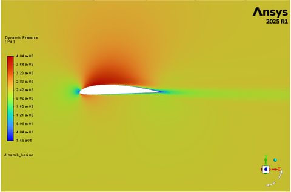
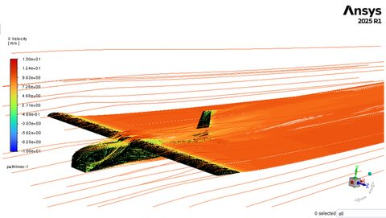
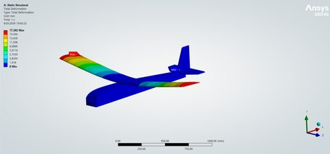
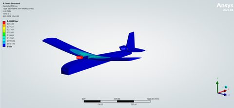
CFDXFLR5ANSYS Fluent
Topology-Optimized UAV Frame
AT-07
Developed a lightweight UAV frame starting from a GrabCAD geometry, evaluated its structural performance, and carried it through to manufacturing. The project's organic, load-driven topology sparked a deeper interest in nTop and topology-driven design.
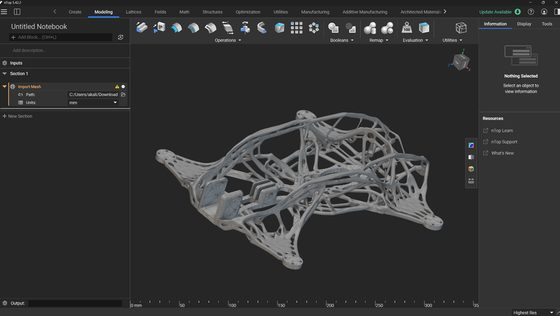
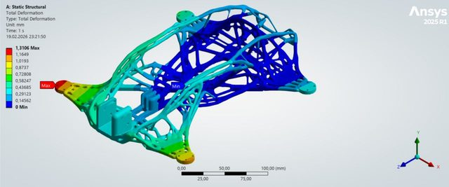
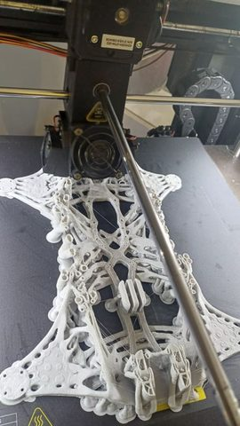
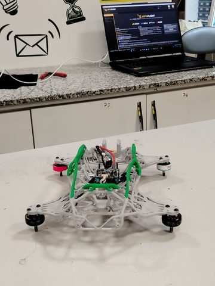
nTopTopology OptimizationAdditive Manufacturing